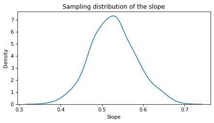
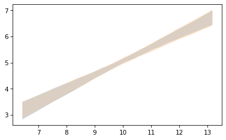

Heteroskedasticity#
Here’s a question from the Reddit statistics forum.
Click here to run this notebook on Colab.
I’ll download a utilities module with some of my frequently-used functions, and then import the usual libraries.
from os.path import basename, exists
def download(url):
filename = basename(url)
if not exists(filename):
from urllib.request import urlretrieve
local, _ = urlretrieve(url, filename)
print("Downloaded " + str(local))
return filename
download('https://github.com/AllenDowney/DataQnA/raw/main/nb/utils.py')
import numpy as np
import matplotlib.pyplot as plt
import pandas as pd
import seaborn as sns
from utils import decorate
Show code cell content
# install the empiricaldist library, if necessary
try:
import empiricaldist
except ImportError:
!pip install empiricaldist
np.random.seed(19)
xs = np.random.normal(10, 1, size=500)
xs.sort()
sigma = 1.3
ys = 0.5 * xs + np.random.normal(0, sigma, size=len(xs))
homosked = pd.DataFrame(dict(x=xs, y=ys))
homosked.corr()
| x | y | |
|---|---|---|
| x | 1.000000 | 0.386422 |
| y | 0.386422 | 1.000000 |
from scipy.interpolate import interp1d
def interpolate(xs, sigma_seq):
return interp1d([6, 10, 14], sigma_seq)(xs)
sigmas = interpolate(xs, [0.4, 2.2, 4.0])
sigmas = interpolate(xs, [0.2, 1.8, 0.2])
np.mean(sigmas)
1.4838202633093243
plt.plot(xs, sigmas, '.')
[<matplotlib.lines.Line2D at 0x7f52fabb07c0>]
ys = 0.5 * xs + np.random.normal(0, sigmas)
plt.plot(xs, ys, 'o')
[<matplotlib.lines.Line2D at 0x7f52fac04820>]
from scipy.stats import linregress
res = linregress(xs, ys)
res._asdict()
{'slope': 0.5264550730938091,
'intercept': -0.20682175339762576,
'rvalue': 0.339552184483038,
'pvalue': 5.868284655442166e-15,
'stderr': 0.06534903628688365,
'intercept_stderr': 0.6526252789345743}
fys = res.intercept + res.slope * xs
plt.plot(xs, ys, 'o')
plt.plot(xs, fys)
[<matplotlib.lines.Line2D at 0x7f52faa718d0>]
resid = ys - fys
plt.plot(fys, np.abs(resid), 'o')
[<matplotlib.lines.Line2D at 0x7f52faadaaa0>]
res = linregress(fys, np.abs(resid))
res.slope
-0.02248112123132494
heterosked = pd.DataFrame(dict(x=xs, y=ys))
heterosked.corr()
| x | y | |
|---|---|---|
| x | 1.000000 | 0.339552 |
| y | 0.339552 | 1.000000 |
# Note: maybe boostrapping won't do it
# Maybe we have to simulate the data generating process
def resample_slope(df):
resampled = df.sample(frac=1, replace=True)
res = linregress(resampled.x, resampled.y)
return res.slope
np.random.seed(17)
sample = [resample_slope(heterosked) for i in range(1001)]
sns.kdeplot(sample)
decorate(xlabel='Slope',
ylabel='Density',
title='Sampling distribution of the slope')

np.std(sample)
0.05486319007993081
def resample_fit(df, xs):
resampled = df.sample(frac=1, replace=True)
res = linregress(resampled.x, resampled.y)
fys = res.intercept + res.slope * xs
return fys
def plot_percentile_fits(df, xs):
fits = [resample_fit(heterosked, xs) for i in range(101)]
low, high = np.percentile(np.array(fits), [5, 95], axis=0)
plt.fill_between(xs, low, high, alpha=0.2)
plot_percentile_fits(heterosked, xs)
plot_percentile_fits(homosked, xs)

Data Q&A: Answering the real questions with Python
Copyright 2024 Allen B. Downey
License: Creative Commons Attribution-NonCommercial-ShareAlike 4.0 International